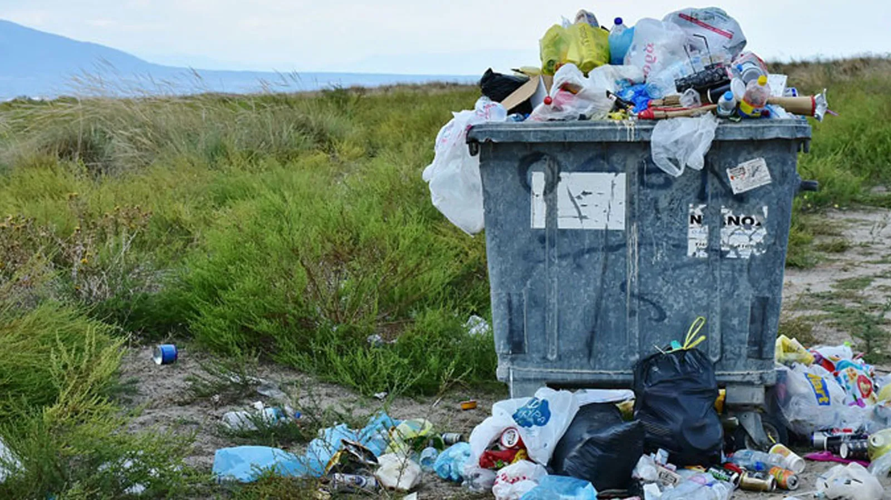

By Turrnut on February 14, 2025

It is no news that climate change is a global issue. According to the United Nations , "climate change" refers to the "long-term shifts in temperatures and weather patterns", such shifts include rising temperatures, rising sea levels, intense droughts, intense weather conditions, etc. Virtually all climate change are caused by by human activities, such as burning fossil fuels and cutting down forests.
However, this article will not go into detail about the causes of climate change, but instead focus on how to solve it. The world is warming at an alarming rate, and our planet is at stake. It is time to address climate change.
Before we go any further, there is one thing that needs to be made clear: The government is responsible for climate change. Not us, the average people, but the government. Why? Well, because that's what government is for. The government is responsible for running the society and keeping order. As such, they have a lot of power and authority. Only with such power can climate change be solved.
Let me give an example: Many people say we should all stop using plastic. But if I stop using plastic, will climate change stop? Apparently not. What about me and all of my friends stop using plastic? Well, climate change still will not abate. If I ask other people to stop using plastic, they might say that everyone else is using plastic and that even if they stopped, the change is minimal.
Advocating for the end of plastic usage in the hope that others will listen is unreasonable. And that is because none of us have the authority over others. But do you know who have that authority? You guessed it, the government.
If the government passed a law banning all plastics and enforce it, there will be a dramatic impact to reduce climate change.
This example proves that only the government can solve climate change, and it is the responsiblitiy of the government to ensure that we and the following generations live in a green, healthy planet.
Now that we know that the government is responsible for climate change, let's see what specific actions should they take to combat it.
First of all, plastic should be outlawed(with the aforementioned reason). But also, another big cause for climate change is greehouse gas emissions caused by industrial pollution and burning fossil fuels.
The long term solution that people are thinking about is finding alternate, renewable sources of energy or energy production, such as solar, hydroelectric, geothermal, wind, etc. These forms of energy production however, are currently unable to satisfy the large energy demand. As such, a short-term solution is needed.
I believe that we need more trees as a short-term solution. This is because trees absorb Carbon Dioxide(CO2) gas during photosynthesis and outputs oxygen. With less CO2 in the air, global temperatures will likely be reduced.
All in all, combatting climate change is no easy task, but it is a task that politicians should be hold accountable for. Any politician who deny the existence of climate change or refuse to take any action are unqualified to hold office.